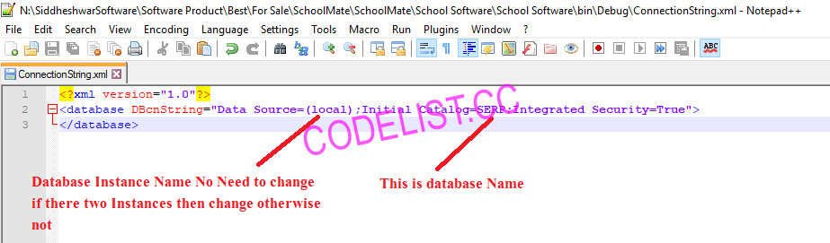

SchoolMate - Complete School and College ERP
Best for School
- Created: 20/04/2020
- Latest update: 20/04/2020
- By: Siddheshwar Software
- https://codecanyon.net/user/mahesh99
- email: nilesh.khendke@gmail.com
This SchoolMate is Best School Management System written in C#.Net 4.0 as front end and SQL Server 2008 R2/2012/2014 so on as Back end . We can also manage Multiple branches of a School by This Software ...
Requirement : Visual Studio 2010/2012/2013/2015 (Sql Server 2008/2012/2014) and SAP's Latest Crystal Report
Feature
Key Feature:
Student Management: Student management system helps in keeping track of student registration process. A user can add, modify or view modules intended to ease registration and identify student’s background during the admission procedure.Staff Management: Staff management system helps in keeping track of staff registration process. A user can add, modify or view modules.
Library Management: Enables a user to maintain the book list with the date of it being issued and date of it when the book is returned.Its have Bar-code Facility also.
Payroll Management: It helps in maintaining the payroll for the staff.
Notifications and Alerts: Students, teachers, staff, etc. Are informed of various activities and happenings through email/sms alerts.
Timetable Management: School timetable software enables a user to set the time table as For the Exams.
Hostel Management: Hostel management system enables the feature of managing the school students living in the school premises i.e. Hostel, school management system manages the hostel activities of Hosteler's Students.
Attendance Management: School attendance management system track the daily attendance of the students and Staffs and sort out the list of students coming under requirement list of attendance.
Examination Management: Make it easy to examine the students and record the results of students easily and Also Prints Attractive Mark sheet and Grade Sheet .
Import Bulk Data From Excel: you can Easiliy Import bulk Data(Students and Employees) From Excel and Export Bulk Data from Application to Excel Sheet also ....!!!!
Reports Management: This module allows a user to generate very Attractive reports which maybe designed specifically to supply the needs of the institution.
Main Features are:
Master Entry :
School Types Entry
School Entry
Class Type Entry
Class Entry
Section Entry
Class Sections Entry
Sessions Entry
Employees Department Entry
Designations Entry
Fee Types Entry
School Fees Entry
Bus Entry
Location Entry
Bus Intallments Entry
Hostel Entry
Hostel Installments
Grading Levels Entry
Exams Entry
Book Suppliers Entry
Books Classifications Entry
Books Category Entry
Books Sub Category Entry
Books Entry
Book Suppliers Entry
Journal's and Magazines Entry
Student Documents Entry
Students:
Student Registrations
Student Discounts Entry
Student Hostelers Entry
Students BusHolder Entry
Students Attendance Entry
Student's Class Promotions Entry
Employee:
Employee Bus Holders
Employee Discount's
Employee Attendance
Employee Salary Payments
Employee Salary Payment Attractive Receipts
Library Management:
Books Fine Setting
Books Reservations
Books Issue
Books Return
Journal and Magazines Billings
Examinations:
Exam Schedule
Final Marks Entry
Mark sheets Printing
Grade Sheets Printing
Marks Ledger
Transactions:
School Fees Payment
Bus Fees Payment By Students
Bus Fees Payment By Staff
Hostel Fees Payment
Fees Payment Attractive Receipts
Bar code Generators:
Random Bar code Generator
Books Bar code Generator
Report:
Student Report
Employee Report
Books Reservations Report
Fees Due List Reports :-
School Fees
Bus Fees
Hostel Fees
Books Issue Report Students
Books Issue Report Staff
Books Fine Collection From Student
Books Fine Collection From Staff
Bus Fees Payment Report
Salary Report
Student Marks Report
Student Grade Report
Identity Cards of Students
Advance Record Searching:
Student List
Employee List
Hostellers List
Books List
Books Issue
Book Return List
Fees Due List For :-
School Fees
Bus Fees
Hostel Fees
School Fees Payment List
Salary Payment Records
Hostel Fees Payment List
Bus Fees Payment List Student's
Bus Fees Payment List Staff's
Employee Advance Payment List
Employee Salary Payment List
Books Suppliers List
Books Reservations List of Staff
Books Issued List of Students
Books Issued List of Staff
Books Return List of Students
Books Return List of Staff
Subjects List
Exam Schedule List
Result List
Other Features:
Power Full User Rights Management System
SMS Feature is Available
Import Bulk Data From Excel
Email Feature
Logs maintain facility
Database Backup option
Database Recovery option
Change Password
Password Recovery
Login Information:
For Admin:
User Type - Admin
User Name - admin
Password - 12345
Installation
You must ensure that you are familiar with the Windows environment before you start to use EsyPOS.
Software Requirements
- Windows XP, Vista, 7, 8 or later
- Microsoft.NET Framework 4.0
- Microsoft SQL Server 2008 R2 /2012 /2014
- SAP crystal reports 13.0.9
Installation:
Step-1
Go to your Main Files / Barcode Font folder. Right click on IDAutomationHC39M.ttf and install.
Step-2
Download .NET Framework V4.0 from this below link and install it.
http://download.microsoft.com/download/9/5/A/95A9616B-7A37-4AF6-BC36-D6EA96C8DAAE/dotNetFx40_Full_x86_x64.exe
Step-3
You need SAP crystal reports 13.0.9 runtime environment to run Crystal Reports.
Install this if your PC 32 bit CRRuntime_32bit_13_0_9.msi
Install this if your PC 64 bit CRRuntime_64bit_13_0_9.msi
Step-4
Please Check MsWord Document 1. How to create SQL Server Database using SQL Server 2008 R2 and we recommend you for Understanding purpose Fire Script With Data on Database.
How to set DB Connection?
This section describes briefly how to compile SchoolMate from source and how to set connection string.
https://youtu.be/t6iVgRX10SM
Set DB Connection string To run Project Solution Here for go to Folder SchoolMate->School Software->School Software->bin->Debug
In Folder Search file name ConnectionString.xml edit it and check database name is correct or not
Windows Authentication Connection string like this and and in Deployment folder also to run application from exe.

You want access database using Login SQL Server then set connection string and in Deployment folder also to run application from exe.
Configuration
Once you have successfully installed you are ready to use SchoolMate.

Default username and password.
User name : admin
Password : 12345
After Login Home Screen, the following window will appear:

Fill Up All Masters With Data
In this module, the user can add, edit School Type. For that Click on “Master Entry > School Type”, the following window will appear:

In this module, the user can add, edit School Entry. For that Click on “Master Entry > School Entry”, the following window will appear:

Master Entry > Class Type”, the following window will appear:

Master Entry > Class Entry”, the following window will appear:

Master Entry > Section Entry Section Means Divisions, the following window will appear:

Master Entry > Class Sections Section Means Divisions, One Class have multiple divisions so you can add here

Master Entry > Session Entry Session Means School Year, so you can add here

Master Entry > Employee Departments Here Add Employee Departments you want add as per school
Master Entry > Employee Designations Here Add Employee Designations you want add as per school
Master Entry > Fee Types Fee Types in School Year, so you can add here

Master School Fees Entry
In this master you can set fee for specific school and Class for specific month”, the following window will appear to add the details:

Other Masters
To Fill the Master as below
- Master Entry > Bus Entry for bus details
- Master Entry > Bus Location Entry for bus route
- Master Entry > Bus Installments Entry for location wise fee
- Master Entry > Hostel Entry for Hostel Details
- Master Entry > Hostel Entry for Hostel Details
- Master Entry > Hostel Installments for Hostel charges as per school and class
- Master Entry > Subject Entry for Max Weekly Classes and Time
- Master Entry > Grading Level for Set Range for Grade and Remark
- Master Entry > Exam Groups
- Master Entry > Book Suppliers
- Master Entry > Book Classifications
- Master Entry > Book Sub Category
- Master Entry > Book Category
- Master Entry > Journals and Magazines for subscription details
- Master Entry > Student Documents what we take at admission time
Student Registrations
For Student Registrations click on student Icon or student menu Student RegistrationsStudent Registrations”, the following window will appear: you can add new record and Select previous record by clicking on getdata button and select and Update it.

Students > Import Student From Excel Import Record from Excel sheets

User Registrations
Users > User Registrations

Users > User Grants
Book Fine Settings
Library > Book Fine Settings

school Fees Payment
Click “Click on Icon school Fees Payment OR Transactions > school Fees Payment”, the following window will appear:
Print Preview Recipt:

Barcode For Books
Click “Barcode Generators > Random Barcode Generators”, the following window will appear:

Records and Reports
Click “Records”, the following window will appear.

Click “Reports”, the following window will appear.

Problem to Encounter
REASONS:
To run this application you first must install one of the following versions of the .NET.Framework: V4.0
SOLUTION
Download .NET Framework V4.0 from this link and install it.
SOLUTION
SAP CrystalReports runtime engine download link:
Step-1
For 32bit desktop
http://downloads.businessobjects.com/akdlm/crnetruntime/clickonce/CRRuntime_32bit_13_0_9.msi
For 64bit desktop
http://downloads.businessobjects.com/akdlm/crnetruntime/clickonce/CRRuntime_64bit_13_0_9.msi
Sources and Credits
Development , documentation and maintenance: Nilesh Khendke .
The project is written in c# 2010 (Microsoft Visual Studio 2010) as front end. MS SQL Server 2008 R2 as back end with SAP crystal reporting system (Version: 13.0.9).
Support
IF you Didn't find your answers? Write us to nilesh.khendke@gmail.com . Please keep in mind that the more information you provide about your problem, the better chance we have in finding the solution.